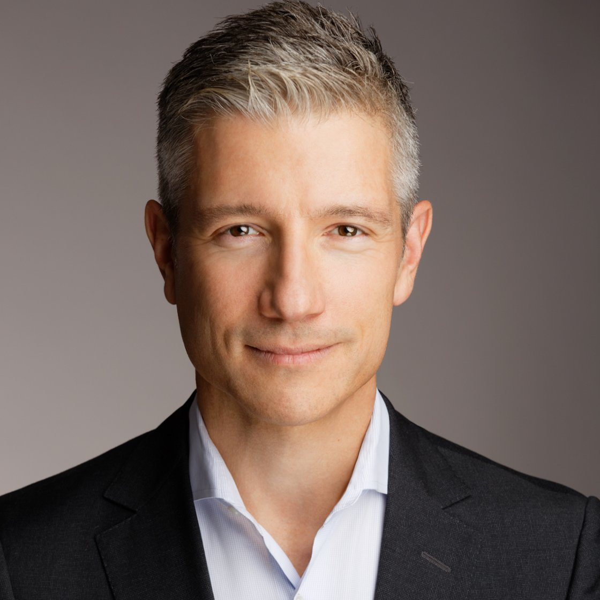

CEO & Founder, Movo · Fulbright Scholar · McKinsey · Five $1B+ tech outcomes
Edina, Minnesota
I'm building Movo to help healthcare providers and government programs prove that services were actually delivered, so good operators get paid and bad actors can't hide. GPS-based verification fails most of the time: 56% match rate for Medicaid personal care, 11% for home health. Good agencies lose revenue to denied claims for work they actually did. State programs built on the honor system get exploited until prosecutors show up. Movo delivers hardware-anchored proof of presence: verifiable, privacy-preserving confirmation of who was where and when. No cameras, no spyware. Providers tap in, deliver care, tap out. Documentation happens automatically. In 60 days, agencies typically see denied claims drop 30-50%, audit exceptions fall 40-60%, and match rates exceed 95%.
I grew up in rural Western Massachusetts. My mom had me at 16 and worked all shifts to lift us out of poverty. I paid for school as a night janitor, security guard, short-order cook, warehouse picker/packer, industrial mechanic, and HVAC tech. A Fulbright scholarship to Germany, graduate work at Harvard, and a career spent building technology companies that create jobs and serve the people who do the work.
Before Movo, I helped build multiple tech unicorns and led them to life-changing exits for investors and employees, across platforms that created millions of jobs: as COO at 99 (Latin America's first unicorn, $1B exit to DiDi) and as an early investor and hands-on advisor (interim COO, interim CMO) to the founders at Rappi. Before that I served as a Regional General Manager on Uber's West Coast leadership team, and I helped scale Avira across Europe and Asia (EVP, Consumer; acquired by Norton). I currently serve on multiple boards, including American Public Media / Minnesota Public Radio.
The company also operates Movo Frontline, autonomous workforce management software serving 700,000+ daily users across logistics, healthcare, manufacturing, and hospitality. Backed by Soma Capital, Gaingels, City Light Capital, and operators including Jenny Fleiss (Rent the Runway) and Rich Williams (Groupon).
I am a descendant of Pierre-Esprit Radisson, the French-Canadian explorer who co-founded the Hudson's Bay Company and mapped the upper Mississippi. My family's roots in this region predate the state of Minnesota itself, and my choice to build here is intentional.
If healthcare compliance, service delivery verification, or government program integrity are on your 2026 roadmap, DM me, or write to [email protected].
More than 20 venture-backed founders and CEOs are alumni of teams I have built. I have made more than a dozen angel investments, almost exclusively in founders from my former scaleups. The most prominent is Rappi, where I was an early investor and served as interim COO and CMO at different inflection points as the company expanded from Colombia into nine countries. Several of those portfolio founders have gone on to build companies including Frubana, Truora, Ontop, and Liftit.
During the years I was operating in São Paulo and Bogotá, I was actively building and investing in the startup ecosystems in those cities. Previous board and advisory roles include the Otto Group ($12B, Hamburg), Scout24 (Munich), eCircle (acquired by Teradata), and Gap, Inc.
I serve on the Board of Trustees of American Public Media Group and Minnesota Public Radio, the largest owner and operator of public radio in the United States (20M+ weekly listeners, all 50 states). I sit on the Finance and Planning & Audience Services committees. APMG produces Marketplace, Performance Today, and distributes BBC World Service.
I am an active advisor to lawmakers and founders working to build Minnesota's technology ecosystem. My broader interests center on civil society, information transparency, and conservation, with the aim of leaving a better foundation for the next generation.
A podcast about what it actually takes to lead a company when the answers aren't obvious. Each episode is a conversation with a CEO or senior operator about how they make decisions under pressure, scale teams, and navigate the politics of the job. The plays that matter in business rarely get talked about or passed down. That's what this show is for.
Guests include Rich Williams (former CEO, Groupon), Mike Linton (five-time CMO: eBay, Best Buy, Farmers Insurance), Dr. Ken Holmen (President and CEO, CentraCare), and Mary Brainerd (former President and CEO, HealthPartners). Several episodes have exceeded 100,000 views. Streaming on Apple Podcasts, YouTube, and Spotify.
Stanford Graduate School of Business, post-graduate coursework
Harvard University, PhD coursework in Economics
Universidad Complutense de Madrid, Master of Laws
University of Göttingen, Fulbright Scholar
College of the Holy Cross, BA with highest honors
DAAD (German Academic Exchange Service) Scholar
English (native)
German (fluent; nearly a decade in Germany)
Spanish (fluent; four years in Madrid)
Fulbright Scholar
Ken Ernst Award (Accenture, top U.S. client impact)
SHRM strategic investment in Movo
Edina, Minnesota
Father of four
Bowhunter, marathon runner, fly fisherman, paddler
Boundary Waters Canoe Area